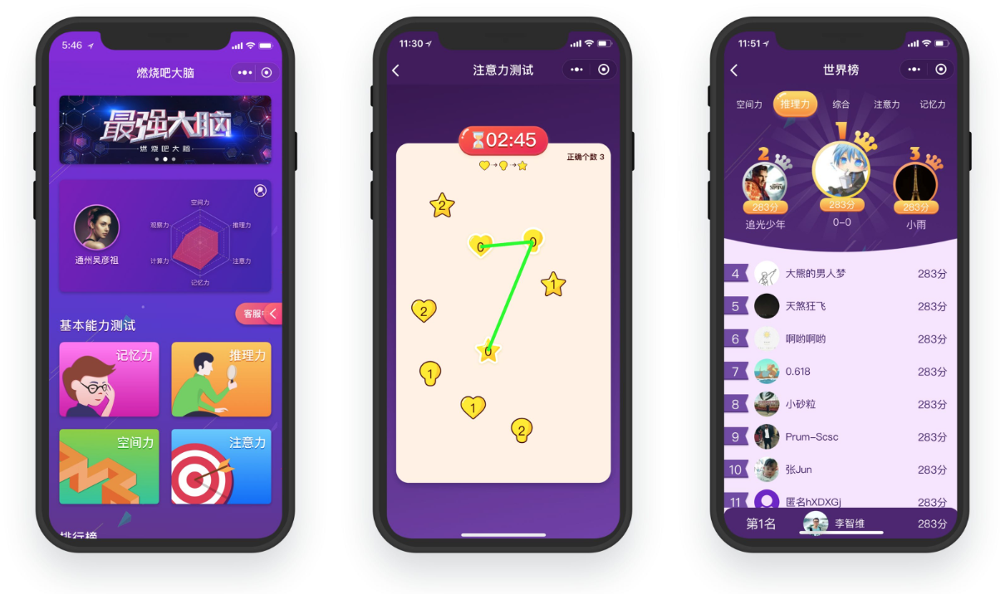

从亏损45万到营收200万 | 原创

以往一天至少一条朋友圈，公众号持续更新推送的创业青年，去年22岁高调的小伙子李智维，已经好几个月未在朋友圈发出任何声音。今年年初，网友说他也不小了该做些实事了。他觉得网友说得确实有道理。今年23岁的他开始低调起来。
今年，他从技术直播平台转为做技术软件外包，走上了新的起点，给客户提供设计和开发整套服务，帮助客户完成小程序、App、网站、人工智能产品、区块链产品的制作，软件外包客户有教育独角兽公司小猿搜题、在线公考教育公司粉笔网、人工智能创业公司中科视拓等20多个，为他们完成了40多个各种项目。
公司转型做软件外包以来，2018年上半年营业收入超过200万，利润超过50万，全职和兼职员工最近也达到了15个。虽然数字很小，但是这一年里他成长了，有了新的认识，新的感受。
如今，李智维再次开放地面对大家，我们进行了以下的访谈。

江苏卫视《最强大脑》节目
官方小程序《燃烧吧大脑》
与揽石传媒设计公司合作
给客户提供设计开发整套服务
项目已获得客户授权展示
问：你为什么认为你的外包是有需求的？
李智维：第一当他们手头上有个项目，有想法要去尝试一下，如果他们要去招聘一整个团队的话，在目前招聘工程师成本很高的情况下，找外包很多时候是一个便宜的方案。
我们的报价在市场上还是倾向于比较实惠的，所以找我们一个好处是便宜，另外一个是灵活。如果你要招全职工程师的话，你要一直养着，而不能说让他们做一个项目，然后项目上线之后就把他们炒了。我们作为一个靠谱的临时工还是挺刚需的。
其次有一些我们合作的大公司也会把一些项目外包给我们，为什么呢？假如你有一个非常好的外包合作伙伴，知道他们干活很靠谱、质量很好，就像公司内部的人一样，有时公司内部没有人力来做一个项目，你会选择把项目交给靠谱的外包合作伙伴。
内部做的话往往成本是很高的，工程师的工资都两三万。而像我们这种外包的方式，成本是比较低的。为什么我们的成本低呢？一个原因是我们通过项目分成的激励制度，更好地使用人才。 我们可以安排一个人把前后端的技术活都干了，在其他公司里要三个人做的工作，我让一个人做了，而这个人我给他两倍的钱。
比如说招3个工程师要6万块钱，而我就给这个工程师4万块钱，他一个人全部做掉这些工作，他会很开心，我们也省了钱。这么做，也同时减少了沟通成本，有时比两三个人还要高效。
但是在公司里这样是不可能的。公司里会有能力很强的人，也能够把这些活全做了，但是这样太累了，而且也没有涨工资。所以这个工程师做了后端，前端就要另外一个人做。公司里的激励制度是：每个人一个月发多少钱，我做后端这一块也是这么多钱，我全部做了也是这么多钱，所以工程师是没有这个动力去做这么辛苦的活的。
《爱大厨》小程序
与爱大厨公司合作
帮助客户做小程序前端
项目已获得客户授权展示
另外，我们有一部分工程师是兼职，他们的报酬会比全职的低一些。一个公司有的职位是活不多的，但他们作为全职工程师却要一直养着，支付一整个月的工资。而我们这边是按照工作量算工资的，一个项目可能两星期就做完了，所以我们就按照两星期的工作量去给钱。其次，我们的工程师都是比较踏实的人，他们在大公司干正职，而在我们这边兼职一个月能挣多一两万就很开心了。但是要招全职的，现在北京好一点的工程师，工资都得在2万以上。
同时，跟大公司合作的话，他们对接的人都是很多的，而在我们这里，一个人就可以跟对方的三五个人对接。还记得做趣直播第一次创业时，我一个人在干那会儿，公司还是可以盈利的，因为我一个人把推广和代码的活干掉了。虽然说盈利不多，一个月流水只有几万块，利润只有一两万块钱。但是我积累了不少用户，算上用户价值的话，我本质上是盈利不错的。
所以我很早就知道，在公司越多全栈的人，什么都可以做，一个人干掉很多事情，公司这样才能生存得比较好。一个人既能做测试，又能做文案，又能做市场，还能做销售。小公司里需要相对全能的人，把所有的活都干掉，这个人能干很多个职位，那个人也能干很多个职位，要彻底地把一个人的时间给填满。如果他是做测试的，请让他整天都在做测试，一直都有活干。如果他是销售，请让他整天在销售。当销售的任务不多的时候，让他也去做测试。
以我的亲身经历来说，你真的要挣回你的工资是很难的。当时我也觉得我的能力不错，毕竟我是一线互联网公司出来的。我创业的时候，因为有了一些圈子里的人脉，可以让他们过来直播，但我还是花了半年的时间，才做到一个月流水三四万，盈利一两万。
我已经用了不少资源，却只挣了一点钱。由此可见，要想挣到钱，在我个人看来，真的要付出很多。在我们公司里，我付出了很多，我的同事也是一样，就连那些很厉害的企业，他们也是很辛苦的。就像阿里、华为，他们的工程师也是要经常加班的，所以他们挣很多的钱。
问：做外包的过程中，你觉得碰到的最难的是什么方面？
李智维：公司规模增大的挑战吧。我们做的一个直播答题的项目，那是我们第一次作为工程师做外包。那时候只参与一个项目，可以很好地做下来，但是后来项目多了之后，比如说有10个项目，不可能是跟一个项目的时候一样，自己一个人是管不过来的，你得让别人管，不能每个项目都自己全程参与，所以会有整个项目变多、规模扩大后的挑战。
每个人都是不同的，没有办法让项目经理们完全按照你的思维、方式去做事，甚至完全没有技术背景的项目经理去做，可能会遇到一些其他问题，比如如何与客户交流等等，不可能一句一句都按你的想法来说，那么怎么才能让别人像你本人一样呢？我逐渐也意识到这是不可能百分百受控制的。

《汉语大词典》小程序
与揽石传媒设计公司合作
给客户提供设计、开发整套服务
项目已获得客户授权展示
于是我们现在逐渐形成了一定的流程，让整个运作在我的控制范围内。比如一个项目会和客户沟通，绘制出思维导图，分析项目功能要点，形成报价单，然后跟客户谈合作。这个过程中，我意识到从管理的层面上来说不能要求这么细，只要去看结果就行了。比如说销售跟客户谈项目的时候，不要去管他对客户的每个问题怎么回答等等，而是看他谈下来了没有，没谈下来的话，原因是什么，我们要去关心最重要的问题。
总结来说就是从我带两三个人做一个项目，到团队二三十个人同时做十来个项目这样的挑战，怎么让公司流程化，怎么给客户最好的体验，即使公司规模扩大了，每个员工还是能像创始人一样给客户最好的体验。
问：未来有没有什么计划？
李智维：从同时做10个项目，到同时做30、40个项目，这也是我一直在思考的问题。应该尽量做更标准化的流程，就像流水线生产一样。
我们公司现在一部分工程师是全职，还有一部分是兼职，我们以后会继续走这条路，找一些兼职的工程师，而不全都是全职的，有很多好处。
比如说夸张到1万个项目来说，就是做信息匹配。我们是作为一个信息平台，所以真正写代码的不是我们，但我们知道并且能找到写得好的工程师。一部分核心的我安排全职的工程师来做。另外设计的工作影响着后面开发的进度，我会尽量安排全职的去做。其他的工作，比如说前端网页、客户端开发、后台管理，可能安排兼职工程师去做。
以后进一步扩张了，更是没有办法所有的事都我们自己来做，所有代码都我们自己来写，我们要做的就是信息匹配，找到那些工程师，他们有房贷，有压力，而且比较空闲，愿意兼职，但是甲方公司不知道这些信息和没有这些人的联系方式，所以，我们就是来撮合工程师给甲方干活的。
例如淘宝，商品并不是淘宝自己提供的，它很重要的一个能力是信息匹配，赚的就是这部分钱，也因为这样能够做成一个大平台。淘宝可以做好1万个商家的信息匹配，那我们也可以做好1万个项目的信息匹配。
当项目越来越多时，我们会做一个内部管理系统，1万个项目的进展、负责人、组成人员都会进入系统，到时候在系统内可以一目了然所有项目的情况，而且只要对接每一个项目的项目经理，做一个轻度的监管，不用去具体管理每个成员。

《TogoCareer拼课》小程序
项目已获得客户授权展示
如果遇到某些项目经理不合适等情况，可能项目会做得不太尽如人意，我们就会进行监管，使得能够及时进行人员更换。在这个过程中也会知道哪些团队是靠谱的、哪些人是靠谱的。我们与这些靠谱的人，全职的或是兼职的，形成长期紧密的关系。
另外一个，计划先多接一些比较小的项目，5到8万的项目，两三个工程师就可以搞定。这样比较小的项目，我们有信心就算它完全失败也可以有利润再做一次或者用其他项目的利润补贴这个项目。同时相信项目多了，我们能积累更多客户，扩张起来。
问：看来目前是你一个人在做管理、统筹，基本都要顾着，那会不会有忙不过来的时候，会不会服务不好客户？
李智维：现在实际情况是这样的，我们有3个人在管理所有的项目，目前大概有10个项目，基本有一半项目的工程师十分积极主动，基本不需要花时间管理，只有剩下另外一半约5个项目需要去推动，目前大致可以管得过来。
当然我们3个人在管理的同时，也要谈新的项目，所以时常也非常忙。这时我们会按照优先级，会先服务好已经成单的客户，对于还在谈的潜在客户，尽量去服务好。当压力比较大的时候，我们会考虑增加人手。
我们会逐渐形成这样扁平化的组织结构，底下是具体写代码、做UI设计的人，然后是小组负责人，最后再往上去是管理层，形成一个三级的组织架构。
问：那前面提到现在工程师、设计师等等，有部分是兼职，那是怎么找到他们的？
李智维：我们一开始是做趣直播，一个技术直播平台，也有讲设计之类的课程，这个直播平台拥有大概近3万的互联网行业的工程师设计师，近1/3和他们加了微信，聊到他们的背景，有些是在京东、阿里等大公司，还有各种创业公司的。
之前聊的过程和朋友圈的互动中，他们了解了我，发现我们现在在做外包，就可能过来合作，渐渐觉得收益不错，也就加入了我们团队成为全职。
人和人都是循序渐进熟悉起来的。例如，问他一个技术问题能不能帮忙解答一下，再到给2000元占用一下他的一个周末，再到给2万用他一个月的兼职时间，如此慢慢建立更多合作。
同时可以去问问周边比较熟悉的朋友，去问他们周边有没有想兼职的、能干的工程师。这就要你尽管去问，多尝试，总是会问到。接下来就是用钱回报他们的劳动力，形成第一次合作，渐渐地长期合作。
我们现在有三四十个随时可以找他们合作的人，那我可能问过更多，找上来也挺多，有时想不起来比较可惜没和一些朋友合作，他们也非常优秀。然后具体聊过五六十个，在这个过程中又进行了筛选，筛选掉那么十多个因为价钱或时间原因不太合适的，然后留下来如今的三四十个有过合作，有十到二十个合作过多次。

区块链游戏FOMOO
项目已获得客户授权展示
问：那客户是否基本上也是这样来的？
李智维：对，是这样。我之前做直播平台，向所有的用户放出微信，加微信就可以拉你进群和技术讲座的主播直接交流。他们加了我的微信，知道我是这个平台创始人，看到我朋友圈一些直播消息以及团队、平台的故事。
这些微信好友们无论谁来问一些问题之类，我都会抽空回答，然后我朋友圈也基本不屏蔽任何人，看到有意思的内容也会点赞，以开放的心态来交流。这是很重要的。一开始什么都没有的时候，可以选择广交朋友的方式，时不时找他们做些什么。
我们很难保证一生只做一个产品，创业也有可能会经历失败，但你要积累自己的用户、客户。拿自己举例：微信两个号加满好友之后，大约可能有少部分人过段时间会把我删掉，但是还有五六千人保持关注度，朋友圈最多的也会有四五百人点赞。那就是积累下来的朋友。
前段时间和朋友聊到一个事情，就是说你好友的数量，100个、1000个、5000个，本质上是一样的，就从这挣钱的角度来说，是没什么不同的，因为你没有和他们一起挣钱。我以前做趣直播自己写代码、做广告，自己一个人干这些，他们仅仅是直播用户，本质上来说还是自己一个人在挣钱，很辛苦。但你和100个人、5000个人合作起来挣钱那就会很不一样。
所以，你要让你的微信好友要么是你的同事，要么是你的客户，你就能跟10个、50个、100个人紧密地合作。比如马云有几万个人执行他的点子，还有成千上百万的商家在他的平台上，所以马云跟很多人合作，挣很多钱。
微信好友，并不在于数量，而在于质量以及与你合作的紧密程度。我现在就是尽量多与人合作，有什么不懂就去问别人，与优秀的人建立联系。所以客户就是渐渐这样来的，毕竟大家都在互联网圈子里，他们都来自朋友圈，或者朋友圈的某个好友介绍过来。
当然这也看你做什么，如果你是科学家，只需要几个一起做研究、写论文的合作伙伴，做好自己的事，做好核心技术就好，而如果你创业的话可能需要很多人的帮助。
这个事情也与个人性格也有关系，比如我，与很多人聊并不会觉得很累，喜欢多交一点朋友，对人感到好奇，从中学时代就是这样，初中那会跟一个年级的大多男生都认识。
一个人要做自己热爱并且擅长的事 ，就不会那么累。换做别人要去跟几千个人聊天可能就会不乐意，而我就觉得去认识不同的人，去了解他们是一件有意思的事。广交际这个事也是从我比较小的时候就开始这么去做，习惯了很多年，再加上自己学编程技术出身，所以可以说软件外包公司的创业方向很适合我做。创业，得先做自己擅长的事情，发挥自己的优点。
问：有这么多好友，那你是怎么与这些好友保持联系，或者说让他们对你保持关注的呢？
李智维：我是一个比较开放的人，没有什么秘密，很喜欢坦诚的感觉，甚至情感上的事、遭受的一些困境、一些生活等等也会分享出来。你会发现这些事情，多数人仅仅是和个别好朋友、亲密的人讲，但你如果和所有人讲，这些人更了解你，你与所有人交朋友，那么从挣钱的角度来说，几率就增加了很多。
不仅仅是创业者，这个习惯可能对其他工作的人也会有用。比如一些科学家也写自己的博客等等。在这个时代扩大自己的影响力，打开自己的内心与别人交流，与别人分享自己的工作，是很好的事情。
问：那你有客户大多来自于多微信好友，那么他们是怎么被发展为你的客户的呢？你怎么让他们把项目给你做？
李智维：很简单，从我理解的微商的运作来看，微商发展客户是天天在朋友圈冒泡，发转账记录等等。首先是要让大家知道我在做这个，那么你要找我做就来私信我，随时找我。你会发现比如一些卖二手车的，直接把微信名改为二手车加手机号，很直接，意思是：来吧，随时打电话过来吧。
那其实我们现在的渠道是微信，如果是公众号等其他渠道也是一样，首先要看到广告或者我们的广告被看到，要么是我们主动去问，主动发广告，要么是看到朋友圈或者别的地方在问有没有人认识什么外包团队，看到别人的广告，那这样就是一个信息匹配过程。要么是我们被动地看到这个信息，要么我们主动发布这样的信息被别人看到。慢慢地，更多人知道了，生意也就来了。
除了去多冒泡等等还有通过一些间接的人脉，或者合作过的工程师介绍项目过来，或是朋友介绍过来，我给介绍的朋友提成，形成一个稳定的渠道。还有是老客户介绍过来，或者老客户做新项目。这样来的项目都是有信任度的，也是能够抓住客户，很快成单的。
问：如果有老客户合作很愉快，会不会考虑长期合作？
李智维：当然是会的，并且也有。比如为教育独角兽小猿搜题公司，做了一些H5、小程序等等，是很好的关系。还有中科视拓，一个人工智能的公司，给他们做了几个AI相关项目，包括他们的产品手册我们也做了。这两家是比较大的客户。
问：有这样合作愉快的客户，也少不了合作不太愉快的吧？那如果说是合作中途闹掰的，会怎么办？
李智维：有也是有的，不过也不能算作合作不愉快。我们之前做一个快递的项目，在我们做得差不多的时候，对方迟迟没有反馈，没有积极推进项目，可能他们又去做别的产品、项目了，然后不了了之。当然这也比较少。
比如还有出现过一个技术难度比较大的项目，是朋友介绍过来的，当初说好了给5000左右定金先尝试一下，结果尝试做的时候发现，还需要破解微信协议，技术上的难度很大，所以把定金退了回去，没有接这个项目，当初一开始就是说好尝试一下的，客户也能理解。
我们的项目偶尔也会遇到这样的一些情况，还有一些延期的情况，但强烈闹得不愉快的是没有的。
问：那要是某个项目没有谈成功，后来这个客户再有别的项目找过来，还会把他当作合作的对象吗？
李智维：会啊，我是比较开放的，我几乎不主动删人。家家都有本难念的经，没有一个人是完全的坏人，一个在别人眼里十分冷漠的人，可能在亲人眼里、朋友眼里是一个热情的人。对于陌生人要更加保留一份宽容。
客户他们有自己的考虑，想要成本更低之类的，那也是正常的，就像我们觉得一些工程师价格太高，可能就选择不和他们合作。
可以合作成当然是好的，就算不合作成功，起码是去尝试了，而且我们与那些一点关系都没有的人建立起了联系，有机会还是可以下次合作。
我们对接一个客户，在前期给他免费做一些事情，做功能分析，做一个详细的思维导图等等，结果还是没谈成的，浪费了很多时间、人力、精力，我们觉得很难过，因为时间是宝贵的，但是却没有谈成。
于是我就想应该与客户上来就谈一个大概的价钱，但其实后来想想你在没跟客户签合同之前就给客户做了很多事情，客户是能够感受到诚意的，而不是像别的外包公司有可能上来就说这个项目要多少钱，那可能会觉得有些功利、计较。而我们先不用收钱，就给客户出思维导图，出报价单，花出珍贵的半天、一天的时间去服务客户，我们相信这样能够使客户感受到我们的诚意。有诚意的态度都是彼此的。
的确，这样运行一段时间后，成单率得到了提高。如果最后没成功，客户也会稍感抱歉。
问：你是怎么样衡量一个人的，你认为怎么的人算是靠谱的人？
李智维：我认为一个靠谱的人是信守诺言。答应你的事都尽可能办到，如果有办不到也尽可能说明原因，要坦诚。从沟通上来说，一个靠谱的人能清晰地表达他的意思，坦诚相见，能把他真实的想法告诉你。如果说甲方觉得我们的方案不合适，我们也是希望他能真诚地告诉我们是为什么。我们也希望了解到一个工程师、设计师他不做我们项目的原因。 所以我一直觉得真诚很重要。
说到一个靠谱的人，比如说看他干活靠不靠谱、能不能及时地响应、答应的事情会不会努力去做到。如果是第一次合作，一般我们会签合同，合同是一个落实到书面上的诺言，当然合同上也会有一些退出的条款，比如说家里有意外事故发生之类的，可以及时地告知我们。
靠谱的人，他的能力很强，干活很快，善于和人合作，信守诺言，那么他就是优秀靠谱的。我们也跟很多人合作过，靠谱的人把活干得很好很快，事事有回应，消息及时回复。如果说确实最近比较忙或者项目哪里有问题，都能坦诚地说出来。
如果说你不能给对方承诺、你明知道是不可能做到的，应该提前拒绝别人，你要把你自己真实的想法表达清楚。
问：你跟这么多人打交道，沟通技巧和为人处世方面这半年有什么感悟吗？
李智维：我越来越发现，人和人合作就是一种约定。为什么会有欺骗，就是说跟之前的约定不一样就造成了欺骗。所以无论是跟情侣、跟父母，跟所有人的相处，人和人之间都是一种约定。如果你没有满足这个约定，人们就会比较生气。
有一些不成文的约定，比如说，你让一个人帮忙，他帮了你；下次他找你帮忙，你却不帮他，这样就是不知恩图报，这其实是一种欺骗。再比如说，男女朋友在一起，承诺在一起的时候我只能爱你一个人，如果说这期间你又爱上别的人，这就是一种欺骗，是一种毁约。
甲方、工程师跟我们一样，任何东西，你沟通清楚，花多少钱，让一个人做什么事情。很多事尽可能在前期要沟通清楚。如果说前期没有沟通清楚，事情做到一半才发现多出来许多工作量，同时没有一定的补偿，就容易纠纷。 有时候确实一开始想得没那么周到，那么中间出现问题的时候，可以相互补充一些约定，使事情能继续做下去。
每次约定之后你要去做到，如果做不到，那就不要许这个诺。要提前跟对方说，避免对方跟你花了很多时间，到最后才说做不到，这是要尽量避免的。讲清楚所有的事情，尽可能地确认好。
为人处世，我很认同李嘉诚说的，他说怎么把公司做大？要吃亏。
有时候我们找工程师，有的工程师我们很想跟他合作，虽然他价格高一点，我们就在早期少挣一点，这样我们就能和这个工程师合作一次。很多时候，钱真的是说几万块十万块都是小事，关键是咱把这个事情做成了。
对客户，我们也是如此，少一点钱接下来项目也行，我吃点亏；和优秀的工程师合作，我也吃点亏。
李嘉诚为什么说做大事业要吃亏，做人的要诀在于吃亏呢？吃亏就在于，很多时候，甲方在乎利益，乙方也在乎，大家都很计较，对吧，只有你一个人愿意吃亏，那么你就得到了做这个事情的机会。然后你更辛苦地把事情做了，挣的钱可能少一点，但是你获得了这次机会，获得了项目过程中的经验，积累了与客户与优秀工程师合作的经验。
比如说我们跟一些工程师，可能稍微贵一点，但他们很优秀，我们尽量都去跟他们合作。渐渐地我们手头上有很多优秀的工程师，然后我们手头上又有很多信赖我们的客户，那是不是两边自然都能给到很好的一个价格，让我们挣多一点利润呢。客户因为认为我们靠谱，所以溢价一些也行，工程师觉得我们这渠道好所以实惠一点也行，所以自然我们可以越来越过得滋润一些。
所以你会发现你越吃亏，你就能跟越多人合作，得到越多的机会。吃亏的精髓在于我不计较眼前的利益，我看重长远的利益和经验积累，我愿意眼下吃亏一些。
所以我们这个公司还有我，这些年很少得罪人，可以说我几乎没有对不起任何一个人。笑来老师投我钱，我亏了，我把它挣回来了。公司账上现在有50多万，如果说随时清算，我能对得起他。所谓为人处世，任何一个给我钱的人，我要对得起他。给我越多钱的人我要越对得起。一个人没给我任何钱，但帮助了我，我也要对得起他。
我们这个公司，说真的，没有让谁不爽了，让谁很难堪了或者是我们剥削了谁的利益。工程师、设计师没有说哪一个人跟我们合作很不满意。虽然说可能一些项目，甲方那边不推动了，我拿不到尾款，但是，我会把钱根据大家所做的工作量分给大家。有时候前期已经做了一些工作量了，但是甲方没有给钱过来，我会倒贴一点钱。有时候钱就这么多，为了我们能合作成功，我少挣一点也行，我吃点亏。
为人处世我们要往长远来着想，优秀的人我们要积极跟他们合作，很多时候为了顾全大局，你吃点亏能让每个人都舒服，每个人都舒服的跟你合作。然后你把客户服务好了，把所有跟你有亲密关系有紧密合作的人都服务好了，我认为这就是为人处世。我情商真的不高，但跟这么多人打交道，道理都是很简单的。就是你对我好，我也对你好。每个人，每个约定，每个承诺都努力去做到，能多为别人着想。有时候工程师跟甲方闹矛盾了，我会在中间做调节。
所以为什么待人宽容，因为跟太多人打交道了之后，你能理解种种的事情。就比如男女朋友都可能互删好友，之前在一起，后来不知道是谁毁了约定，另一个人觉得受到了欺骗，于是他们都互删了好友或者别的。人与人的关系有时候又是脆弱的，所以就能理解别人有时候为什么闹矛盾，这都是正常的。
所以为人处世应当多为别人着想，有时候宁愿自己吃点亏，顾全大局；去实现每个承诺，在做事情的时候把任何东西表达清楚，把双方的约定讲清楚，有任何意见不一样的地方，在开始合作前先谈清楚；如果说在过程中才发现的，要有相应利益的补偿，安抚大家。这是我为人处世的一点感悟吧。
问：怎么样管理你的公司？怎么把你的公司管好？
管理公司，我们现在管二三十人的工程师、设计师的一个开发团队，“透明”是很重要的，我们用GitLab，一个代码管理系统，我可以看到所有工程师的提交，可以看到每个人的进展，看到大家做了什么。
透明，就是为了你能很好的监管大家的工作，毕竟有时候并不是每个人都非常有责任感，而且他可能也确实没有时间去做他应该做的事情，那么你能提前去发现，去介入。所以管理公司要非常的透明化，然后你的职责要清晰。
我们兼职工程师的工资都是按分成的，多少钱办多少事，我们很清楚，很清晰，所以职责要划分清楚。为什么公司会混乱，因为职责没有划分清楚，每个人不知道自己要干什么，也没有人组织大家要干什么。我们用一个外包的项目制很好地把公司管理好，而且公司的事情尽可能在工作群里聊，其他相关的人也能同步到信息这就是尽可能透明化。
桥水基金的创始人Ray Dailo，他说：“要追求极度的透明。”
管理好公司，一个是极度的透明化，还有要坦诚、真诚地沟通，每个人能说出自己真实的想法。其次，公司是盈利的地方，虽然要讲感情，但是很多时候如果你对下属对员工很宽容，而甲方对你不宽容、要求很严格，那么所有的压力都要你来承担。如果员工的压力很小，那么你作为管理者，你的压力就很大，你要让团队一起去承担你的压力。
管理公司，一个是职责清晰、职责分明；然后所有人都一起承担压力，让所有人都很自觉、积极主动的去做好自己的事情，这是我管理公司的一点思考。当然我们现在规模也还很小，等我们到了更大的一个规模，我们想必会有新的思考。
问：你对于职场上的工程师，有什么样的建议呢？
李智维：我一直说要开放，要多尝试，多去挑战自己。不能一直做重复的、简单的事情，那是没有意义的。一个工程师不能只是做一些简单的页面，重复这些，而是要不断地学习，学习新的技术。
我认识到这个问题是初二到高三学编程竞赛5年，最好的成绩是考进了省赛。我发现这5年并没有学到什么东西。这5年业余时间里，我在重复地解决一些简单的编程问题。同时也是一个人在弄，没有和别人交流，没有向更厉害的人学习。
问：聊一下你自己吧，讲一讲工作中、生活中的榜样、偶像吧。
李智维：就会关心一些这个时代的牛人，就像TMD的王兴、程维、张一鸣啊，关注互联网圈的很多人，关心乔布斯、孙正义等等这些人，最近看一些讲人类、地球发展历史的书，比如《文明之光》，其实世界从古至今的牛人都是参考的榜样，会关注相关的一些传记、作品等等。但其实很多事关键是要自己去实践，去思考，别人的例子无法真正地教给你怎么做。
对我影响比较深的是一个人，叫保罗·格雷厄姆，国外一家最著名的创业孵化器YC的创始人。我创业也是因为他，他很鼓励年轻人创业。我读、翻译他的文章，深刻地研究他的思维观念，尽可能把他的思维观念搬到我的脑子里，但是很多东西我是还不懂，只停留在文字层面。人的观念有时很难改变的，那我就先去做了，再思考他的观点，后来就加深了理解。我很感谢自己迈出了这一步。
在我更年轻的时候，我记得初二时我在电脑里打开Word文档，写道我的梦想是用技术改变世界。一个人最关心、看中的、想做的、有兴趣的，那就是你的底层系统。可能具体人生过程是难以预料的，比如说我今年做外包，明年可能做别的。但你的职业生涯会跟你的底层操作系统息息相关。
我年轻的时候对创业、事业、成功、技术比较感兴趣。会去看相关的资讯和书，然后遇到一个青睐的榜样，格雷厄姆，对他的观念去抄、背、翻译，去践行，果然也得到了提升。记得初中那会，也读过李笑来老师的书《把时间当作朋友》，他现在是我们公司的一个投资人。一晃10年的时间。
所以从小关注一些商业、效率、成功案例、技术等等，思维观念和认知可能通过看很多书、经历很多事，难以一下子就改变，但是日积月累是会有改变的。
还有从身边的人身上学到很多，比如猿题库副总裁LX，小猿搜题产品技术负责人TQ，我第一份工作的领导现在是阿里技术专家的ZXD，与他们共事的过程中，也学到很多东西。
榜样是需要的，然而很多事还是要真正去做了才能成长。
问：前面说到李笑来老师是你的投资人，你对投资有什么看法？拿到投资，对你有什么改变？
李智维：首先，得到投资之后，要去学习以合理的方式，管理好你的财富，用在正确的地方，无意义的挥霍是不可取的，如何正确地用好钱是一个学问。当你没有能力去匹配这个财富的时候，那么财富可能很快地被烧完。
不光是你没有把钱用对地方，而且你的心态也会变。比如我得到李笑来老师50万投资的时候，我的心态还是微妙地变了。我很快用来招人，不再愿意自己亲自很辛苦地做脏活累活，不愿意自己一个个拉人进群。觉得自己不会管理，就想着招人来锻炼自己的管理能力。公司还没有跑起来盈利可观的业务，就一下招了比较多人。心态还是微妙地变了，飘了，变得不踏实了，我觉得公司有钱了，我是管理者了。
那如果这些钱是我之前自己工作挣的钱，我会觉得它们来之不易，但现在这50万是投资人的钱，不是我挣的，还是没能感受到挣钱的辛苦，没能去把钱用在刀刃上，对员工要求也不高，所以一下亏了45万，我的能力没有到管这些钱的程度。
像身边有些人创业获得投资很多，然后亏了上千万也有，然后他们变得低调了，过大的压力可能击垮了有的人，让人一蹶不振。我拿到的是50万，亏了还可以挣回来。我很感谢李笑来老师，也不是给我很多钱，如果他砸了300万，那我可能会亏更多，需要更多时间才能挣回来，压力更大。
我认为对创业者来说钱来得太容易并不是一件好事。创业的年轻人无论是创什么业，开餐馆也好，创业是大是小，如果你不是在大公司做高管，辈分已经很高，能力已经很强，只是一个基层的项目经理、工程师等等，我建议出来第一次创业的时候都不要轻易拿别人的投资。
尽管这个钱不用还，但它是人情，人情是要还的，别人的期望是不能随便辜负的。李笑来老师跟我说，没事，没关系，慢慢来。但我没亏过别人这么多钱，还是有着很大的心理压力。
刚出来创业的年轻人，懂得比较局限，假如你是一个工程师，可能不太懂怎么招人用人，不太懂怎么做销售，所以你想创业，可以先打拼，拿着自己在企业工作，甚至打工赚来的、无论多少的钱，去创业，挣一点是一点，自己亲力亲为、学到方方面面，一步一个脚印来，成功是需要时间的。时常有社会新闻说，给年轻人创业的钱都被烧光了，有的跑路了，我渐渐也理解了。太容易得到的钱、太多的钱会毁了一个人。
如果你是大公司的高管，有很多人脉，有管理能力，融资千万创业是挺好的，他们怎么做我没有资格评判，但像我这样一线互联网工程师出来创业的，我建议咱们还是先踏踏实实挣点钱。
问：那你现在挣了钱了吗？目前创业状况如何？有什么感受呢？
李智维：目前可能看我们公司流水今年上半年有200万，盈利50多万，给客户做了40多个项目。也没有什么成绩，但至少可以养活一个团队。其实我做更多事是失败了的，之前想做自媒体来接发广告的失败了，做付费社群的失败了。更细节的，像我们之前做的趣直播请主播、找老师，也有些不理我们，失败了。
有句话类似说：为什么硅谷牛，因为这里上演着更多失败。孙正义身为日本首富、阿里巴巴的投资者，他说：我的一生大部分事情都失败了。
因为挣来了50万也好，100万也好，都是小钱，用钱买不回来的是经历、成功的经验、失败的教训、技术能力、做事的方法以及对社会运作和人性的认知。现在挣的钱都是小钱，是为了长期积累、长期打磨自己，等待将来有一天能去做伟大的事情。